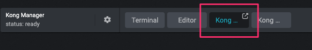
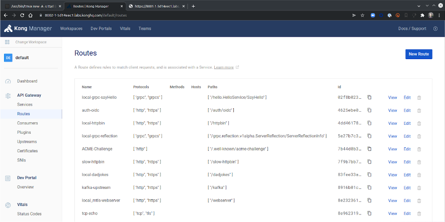

Kong Gateway Installation Introduction
Introduction
The purpose of this lab is to give you practical experience of installing the Kong Gateway. test
test
Kong can be installed on many types of platform, and each has its own set of requirements. For the purposes of this course we will be installing it using Docker Compose.
The steps we will go through are as follows:
Agenda
Course Legend
In this course, commands intended for typing into the terminal are formatted in red text and the expected response is in white, for example
pwd
/home/ubuntu
View Docker Compose and SSL Configuration
Viewing Docker Compose and SSL Configuration
For the purposes of this course we will deploy Kong using docker compose:
We will perform the following specific tasks:
- Peruse Kong Gateway Configuration
- View SSL Certificates
Task 1: Peruse Kong Gateway Configuration
Take a few minutes to read through the docker-compose.yaml file in the installation directory.
yq docker-compose.yaml
You can see this compose file will deploy a number of containers including:
- Kong Data Plane - kong-dp
- Kong Control Plane - kong-cp
- Database - db
- An email SMTP server - smtp-server
(The 'smtp-server' container is used by the Dev Portal to send emails to Kong admins and developers)
These services are bound to the network kong-edu-net
SSL Certificates
To be ultra secure you should create custom SSL Certificates for each component. However for our training lab we will use two certificates:
- A 'server.crt' certificate for Admin API, Kong Manager GUI, Dev Portal GUI, and Dev Portal API
- A 'cluster.crt' certificate for intra-cluster communications
These certificates are generated for our lab at boot time. The docker-compose file expects to find the SSL certificate/key pairs in the /etc/kong/ssl/ directory and are mounted in the running container under '/srv/shared/ssl-certs'
Task 2: View SSL Certificates
ls -l /etc/kong/ssl/
-r--r--r-- 1 root root 525 Mar 26 11:53 cluster.crt
-r--r--r-- 1 root root 305 Mar 26 11:53 cluster.key
-r--r--r-- 1 root root 4234 Mar 26 11:53 server.crt
-r--r--r-- 1 root root 227 Mar 26 11:53 server.key
yq .services.kong-cp.volumes docker-compose.yaml
...
volumes:
- /etc/kong/ssl:/srv/shared/ssl
...
...
Start the Kong containers
Starting the Kong containers
We are now ready to start the containers to deploy Kong.
We will perform the following specific tasks:
- Bring up Kong Gateway
- Verify Admin API
- Verify Kong Manager
Task 1: Bring up Kong Gateway
Make sure you're in the installation directory and run docker-compose up -d.
docker compose up -d
[+] Running 13/13
⠿ Container grafana Removed 0.7s
⠿ Network kong-edu-net Created 0.1s
⠿ Container keycloak Started 1.8s
⠿ Container redis Started 2.0s
⠿ Container postgres Started 1.6s
⠿ Container smtp Started 2.0s
⠿ Container prometheus Started 1.8s
⠿ Container mockbin Started 1.8s
...
Task 2: Verify Admin API
In our lab environment we can access our Kong Admin API on localhost:8001
http --headers GET localhost:8001
HTTP/1.1 200 OK
Access-Control-Allow-Credentials: true
Access-Control-Allow-Origin: https://4nabxokzcbm86e7we-63dd1a5a73e7d652becc1152.labs.kongedu.io:8445
Connection: keep-alive
Content-Length: 22446
Content-Type: application/json; charset=utf-8
Date: Sun, 26 Mar 2023 12:25:45 GMT
Server: kong/3.2.2.0-enterprise-edition
X-Kong-Admin-Latency: 301
X-Kong-Admin-Request-ID: 0KiW9ORafTQls4fu91XloASMmQC3kpT9
vary: Origin
Task 3: Verify Kong Manager
Click on 'Kong Manager' at top of the screen


You'll also notice the warning about the license - we will apply the licence next.
Refresh
Please note, you may need to click the refresh button.

You'll notice you did not need to log into Kong Manager - that's because RBAC Authentication has not yet been enabled.
Applying a Kong Licence
Kong Licence
In traditional deployment with no separate control plane, license must be deployed to each node running Kong Gateway.
There are multiple ways to configure a license file on a Kong Gateway node. These are defined below in the order in which they are checked by Kong:
- If present, the contents of the environmental variable
KONG_LICENSE_DATAis used - Kong will search in the default location
/etc/kong/license.json - If present, the contents of the file defined by the environment variable
KONG_LICENSE_PATHis used - Directly deploy a license using the
/licensesAdmin API endpoint- e.g.
http -h POST localhost:8001/licenses \ payload=@/path/to/license.json
- e.g.
Kong Licence
In hybrid deployments, applying the license to CP using method 4, will result in distribution of the license from CP to DP. Otherwise methods 1/2/3 should be used on each DP node.
We will perform the following specific tasks:
- Apply the license
- Restart the Control Plane and and Review the License
Task 1: Apply the license
For the purpose of this lab we will apply the licence using option 4 above, i.e. by using the Admin API endpoint.
Run the following command:
http -h POST localhost:8001/licenses payload=@/etc/kong/license.json
Task 2: Restart the Control Plane and and Review the License
No matter which option you used to apply the licence, you need to restart the Kong Gateway for the licence to be applied.
docker compose stop kong-cp
[+] Running 1/1
⠿ Container kong-cp Stopped 6.6s
docker compose rm -f kong-cp
Going to remove kong-cp
[+] Running 1/0
⠿ Container kong-cp Removed 0.0s
Task 2: Restart the Control Plane and and Review the License
docker compose up -d kong-cp
[+] Running 4/4
⠿ Container postgres Running 0.0s
⠿ Container kong-migrations Started 0.5s
⠿ Container kong-migrations-up Started 0.9s
⠿ Container kong-cp Started 1.6s
Task 2: Restart the Control Plane and and Review the License
You can verify the licence in the database
http GET localhost:8001/license/report
{
"counters": [
{
"bucket": "2023-03",
"request_count": 0
}
],
"db_version": "postgres 13.1",
"kong_version": "3.2.2.0",
"license_key": "0011K000022IA3HQAW_a1V1K0000099iyaUAA",
"system_info": {
"cores": 4,
"hostname": "kong-cp",
"uname": "Linux x86_64"
},
"workspaces_count": 1
}
Licence Details
You can get further details on the deployed license from the license file itself:
cat /etc/kong/license.json | jq
Loading Configurations with decK
What is decK?
decK is a command line tool for declaratively managing Kong's configuration:
- No need to run individual API commands to Kong's admin endpoint -just define Kong's desired state in a YAML file, covering services/routes/plugins/etc., and let decK Sync configuration to Kong.
- Configuration can be maintained in GitHub, fostering team collaboration and distributed workflows.
- decK can also run diffs to detect any drift or changes and can back up your instance's configuration.
- decK's state file can contain sensitive data such as private keys of certificates, credentials, etc. It is up to the user to manage and store the state file in a secure fashion.
Using decK
We will perform the following specific tasks:
- Verify decK and Create a sample Service/Route
- Load Kong Configuration using decK
- Sync updates and view config in Kong Manager
- View created entities in Kong Manager
- Restore Kong Configuration using decK
- Confirm Service Restoration
Task 1: Verify decK and Create a sample Service/Route
Let's create a sample service/route that we could use deck to save, delete and restore.
deck gateway ping
Successfully connected to Kong!
Kong version: 3.2.2.0
Next we will create a simple service and route:
http POST localhost:8001/services \
name=mockbin_service \
url=http://mockbin:8080
http -f POST localhost:8001/services/mockbin_service/routes \
name=mockbin_route \
paths=/mock
Task 2: Load Kong Configuration using decK
Backup current configuration to a YAML file we can review/restore.
deck gateway dump --output-file labdump.yaml --workspace default
Use decK to compare the state file with the active configuration:.
deck gateway diff labdump.yaml
Summary:
Created: 0
Updated: 0
Deleted: 0
Task 2: Load Kong Configuration using decK
Delete current configuration, resetting to default.
deck gateway reset
This will delete all configuration from Kong's database.
> Are you sure? Y
deleting route mockbin_route
deleting service mockbin_service
Summary:
Created: 0
Updated: 0
Deleted: 2
Task 2: Load Kong Configuration using decK
Verify there is no configuration, either in Kong Manager or using Kong Admin API
http -b localhost:8001/services
{
"data": [],
"next": null
}
http -b localhost:8001/routes
{
"data": [],
"next": null
}
Task 2: Load Kong Configuration using decK
Restore backup to active configuration
deck gateway sync labdump.yaml
creating service mockbin_service
creating route mockbin_route
Summary:
Created: 2
Updated: 0
Deleted: 0
Task 3: Sync updates and view config in Kong Manager
We can use deck diff to compare active configuration to another saved state, and deck sync to upload the reviewed saved configuration to Kong.
deck gateway diff sampledump.yaml --workspace default
deck gateway sync sampledump.yaml --workspace default
...
creating plugin udp-log for route f491db3f-7018-4197-ae6e-42f69202d6e1
creating plugin rate-limiting-advanced for route d86e9f0c-e2bc-470d-a5a9-8f523512f379
creating plugin acme (global)
creating plugin openid-connect for route 4625ebe0-8287-44a2-8cc0-27a182e5a06d
deleting route mockbin
deleting service mockbin
Summary:
Created: 56
Updated: 0
Deleted: 2
Task 4: View created entities in Kong Manager
You can use Kong Manager to review new entities that were created using the sync operation.

Task 5: Restore Kong Configuration using decK
Now we can restore Kong configuration from the YAML file we created earlier:
cat labdump.yaml
deck gateway sync labdump.yaml --workspace default
...
deleting ca_certificate fa6e9989-86cb-4b26-bedd-b5f2f1af7f76
deleting certificate f28adba8-8a29-4f04-8cc1-0646746ac48a
deleting certificate 507cc555-5b92-496d-9e89-bfc78dfcddbe
deleting certificate f3ae1bb2-ea6a-4caf-a7a7-2f078b7842db
Summary:
Created: 2
Updated: 0
Deleted: 56
Task 6: Confirm Service Restoration
Now you can review the service/route in the Kong Manger to confirm it is restored. That could also be achieved through the Admin API. Once done, let us create a request to observe functionality.
http GET localhost:8001/services
http GET localhost:8001/routes
http GET localhost:8000/mock
http --verify no GET https://localhost:8443/mock
HTTP/1.1 200 OK
Access-Control-Allow-Credentials: true
Access-Control-Allow-Headers: host,connection,x-forwarded-for,x-forwarded-proto,x-forwarded-host,x-forwarded-port,x-forwarded-path,x-forwarded-prefix,x-real-ip,user-agent,accept-encoding,accept
Access-Control-Allow-Methods: GET
Access-Control-Allow-Origin: *
...
Kongratulations!
Kongratulations!
Kongratulations! You have now completed the "Kong Gateway Installation Overview" course.
Please visit https://education.konghq.com/ to continue your Kong education.
Thinking of becoming Kong Certified? Visit https://konghq.com/academy/certification.